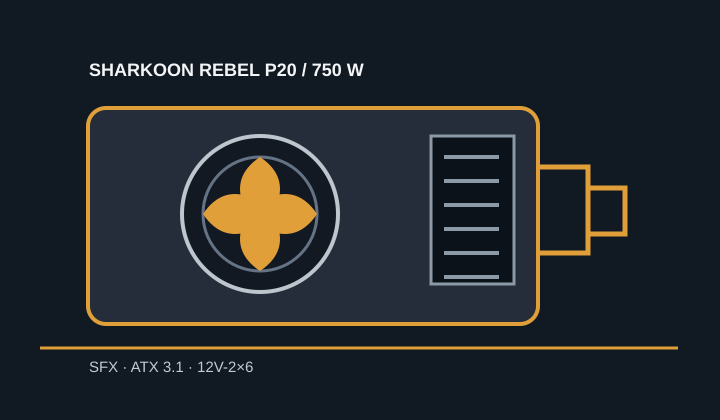

[ POWER CONVERSION // IDENTIFIED MODEL ]
Sharkoon Rebel P20 SFX 750W
750 W variant of the Rebel P20 SFX series. Use the 750 W column of the manufacturer's 750/850/1000 W manual and verify the physical label.

HIGH-VOLTAGE SAFETY: Never open or probe the PSU. Isolate mains power before disconnecting external leads.
Verified model specifications
| Model / rated output | Sharkoon Rebel P20 SFX, 750 W variant; SFX 12V V4.1 / ATX 3.1 family. |
|---|---|
| Form factor / dimensions | SFX; 100 × 125 × 63.5 mm (length × width × height). |
| DC output rails | +3.3 V: 20 A; +5 V: 20 A; combined +3.3 V/+5 V: 100 W; +12 V: 62.5 A / 750 W; −12 V: 0.3 A; +5 VSB: 3 A. |
| Efficiency claim | Not included; no model-specific efficiency certification is claimed. |
| Cable-end connector counts | Fully modular: 24-pin motherboard ×1; CPU 4+4-pin ×1 plus CPU 8-pin ×1; PCIe 6+2-pin ×2; 12V-2×6 ×1; SATA ×8; IDE/Molex ×1. Counts refer to cable ends. |
| Revision and cable cautions | Use the 750 W table only; do not transfer ratings from the 850 W or 1000 W siblings. Manual directs use of supplied compatible cables; PSU-side modular pinouts are not universal. |
Compatibility & safe installation
- Check case depth, SFX mounting, intake clearance and 12V-2×6 plug bend space. Confirm that the GPU itself supports the connector and required cable routing.
- For high transient GPU loads, verify the complete platform load and +12 V rating; nominal total wattage alone is not a compatibility guarantee.
- Use only supplied cables or replacements Sharkoon approves for the exact Rebel P20 SFX model and revision. Never substitute an apparently matching modular cable.
- Do not open or probe the unit.
Manufacturer sources
- Sharkoon Rebel P20 SFX product pageManufacturer product identity and product-family features.
- Sharkoon Rebel P20 SFX manualManufacturer 750 W model rail table, dimensions, modular cable connectors and cable-use warning.